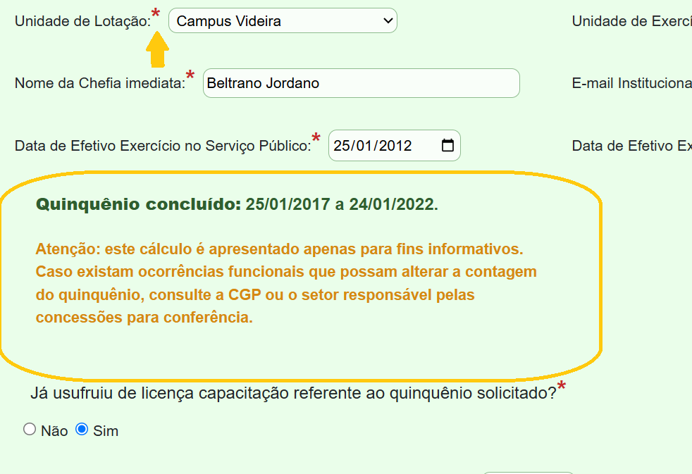
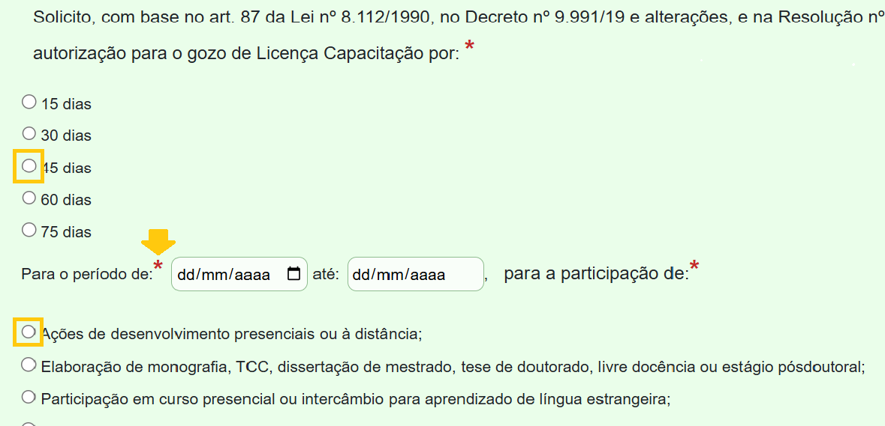
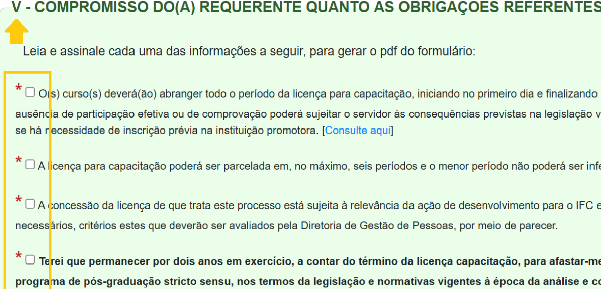
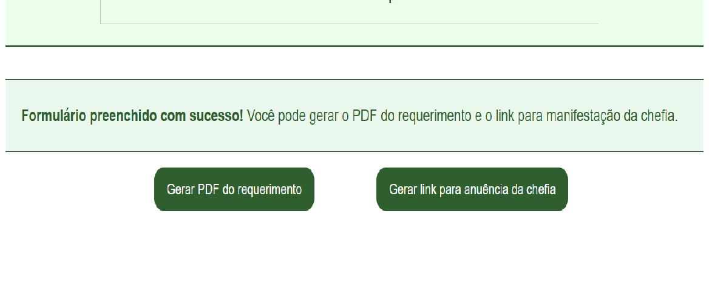
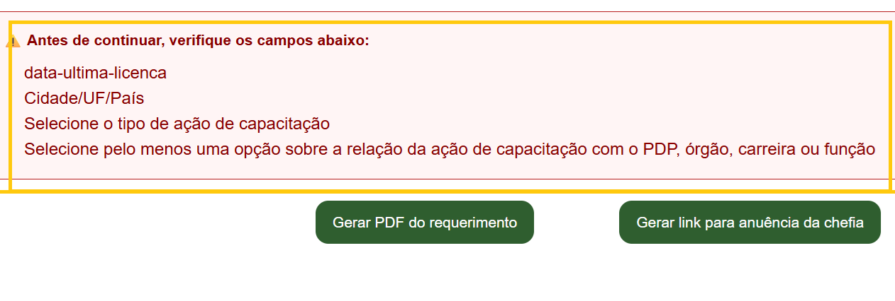
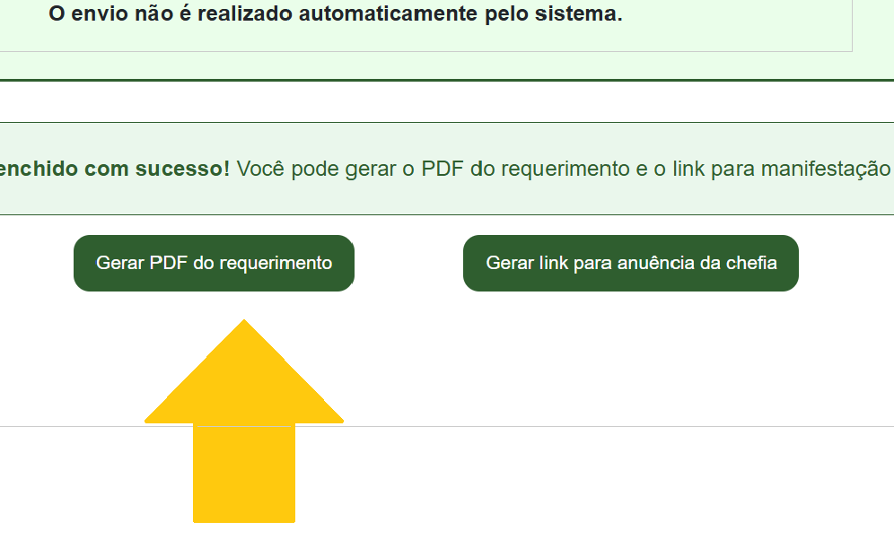
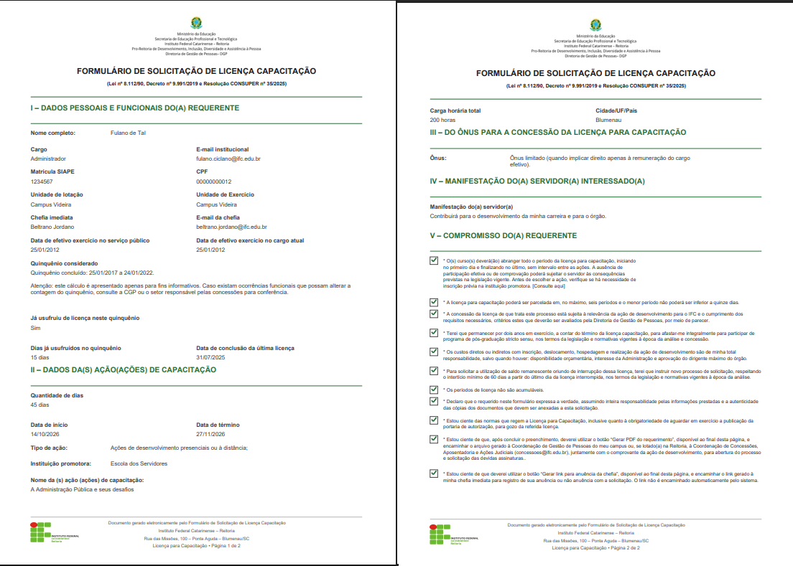
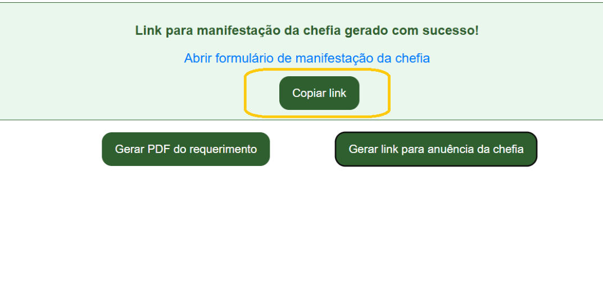
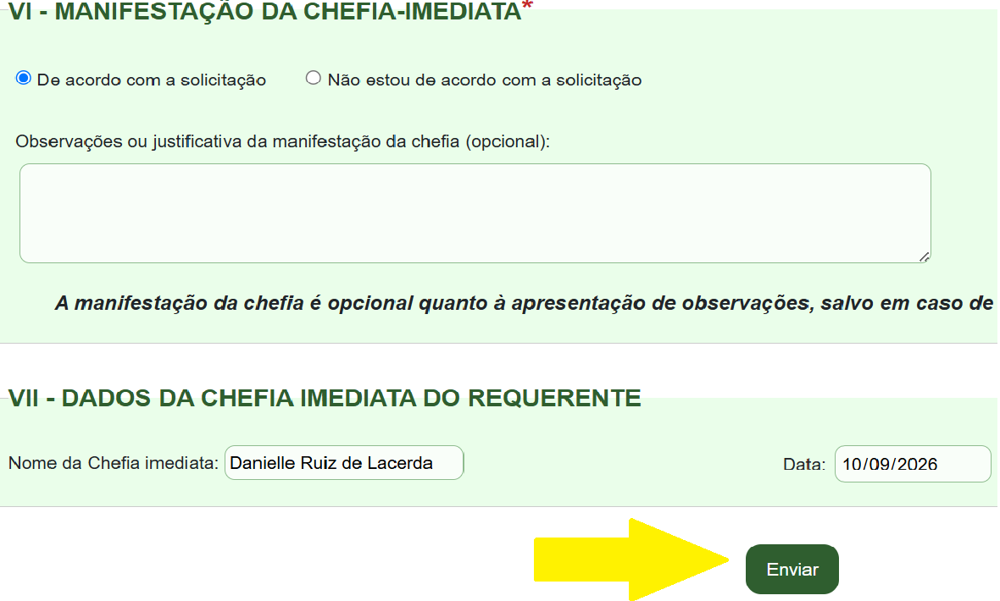
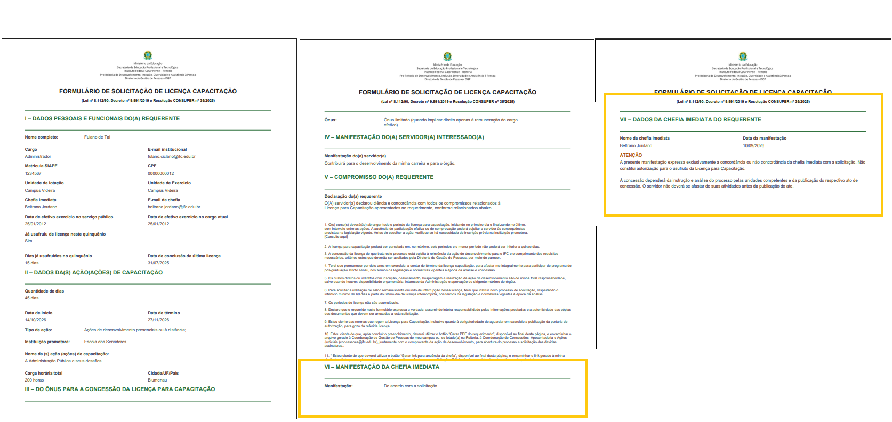

Passo a passo para preenchimento e envio do requerimento
Este formulário possui validações automáticas que auxiliam no correto preenchimento da solicitação. Para concluir o procedimento, utilize os botões disponíveis no próprio formulário, conforme as orientações a seguir.
Passo 1 de 8 — Preencha o formulário
Preencha todos os campos obrigatórios e observe as mensagens de validação apresentadas pelo sistema.

Passo 2 de 8 — Escolha uma opção
Nos campos obrigatórios com opções para assinalar, marque pelo menos uma, ou mais, quando possível (relação da ação de desenvolvimento).

Passo 3 de 8 — Leia com atenção e assinale cada item
Na Seção V, dos compromissos do requerente quanto às obrigações referentes à licença para capacitação, o servidor deve ler cada um e, ao final, todos devem estar preenchidos.

Passo 4 de 8 — Confira a conclusão
Caso tenha preenchido todos os campos obrigatórios, aparecerá a mensagem abaixo, validando o sucesso no preenchimento. Você pode prosseguir e clicar nos botões para gerar o PDF do requerimento e para gerar o link para a solicitação da anuência da chefia.

Passo 5 de 8 — Preenchimento incompleto
Quando faltar algum campo a ser preenchido ou assinalado, será (ão) listado (s) acima dos botões e você não poderá gerar nem o pdf e nem o link da chefia, enquanto não completar todo o formulário.

Passo 6 de 8 — Gere o PDF do requerimento
Clique no botão para gerar o PDF do requerimento com os dados do servidor.
Não utilize Imprimir/Salvar como PDF do navegador.

Modelo do Requerimento em PDF
O requerimento em PDF do servidor será baixado no seguinte modelo:

Passo 7 de 8 — Gere o link para anuência da chefia
Clique no botão para gerar o link para solicitar a anuência da chefia. Será gerado um link que o servidor deve copíar e encaminhar por e-mail para sua respectiva chefia.
A chefia abrirá este link e se encontrará no formulário eletrônico com todos os dados do servidor - que não poderão ser editados por ela - além da seção da anuência. A manifestação por escrito apenas será obrigatória se a chefia não estiver de acordo.

Passo 8 de 8 — Encaminhe o link para o e-mail da chefia
Encaminhe o link copiado para o e-mail de sua chefia imediata com cópia para a Coordenação de Gestão de Pessoas, se for lotado no Campus, ou para concessoes@ifc.edu.br, se for lotado na Reitoria.
A chefia abrirá este link e será encaminhado para a página do formulário eletrônico com todos os dados do servidor - que não poderão ser editados por ela - além da seção para a sua resposta quanto à anuência. A manifestação por escrito apenas será obrigatória se a chefia não estiver de acordo.

Modelo do Requerimento em PDF - com a manifestação da chefia
O requerimento em PDF do servidor - com a anuência ou desacordo da chefia - será baixado no seguinte modelo:
